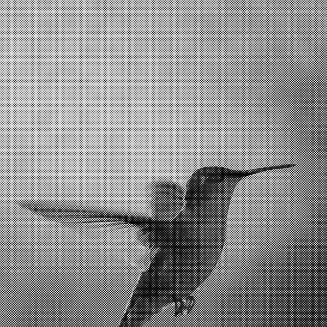
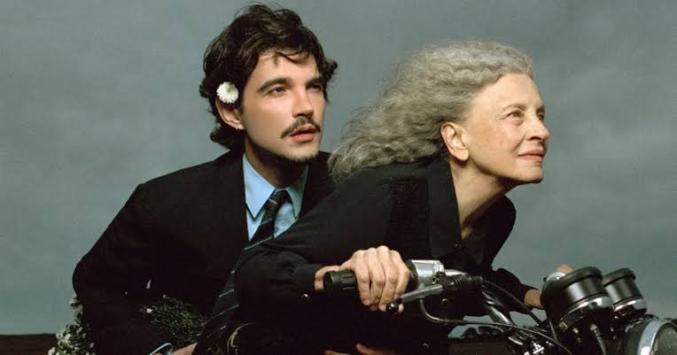
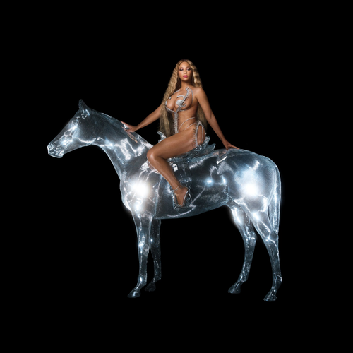
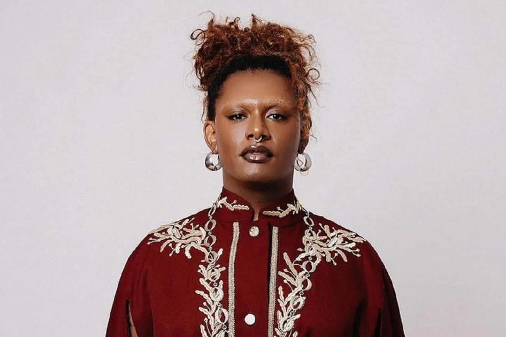
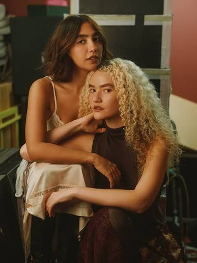
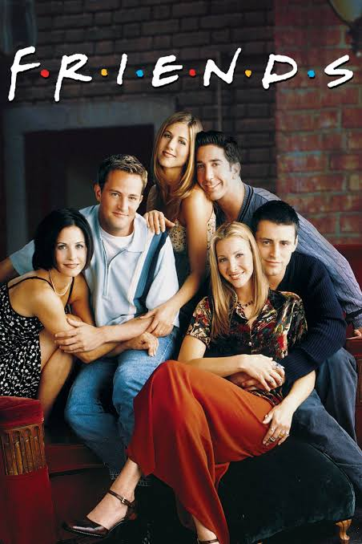
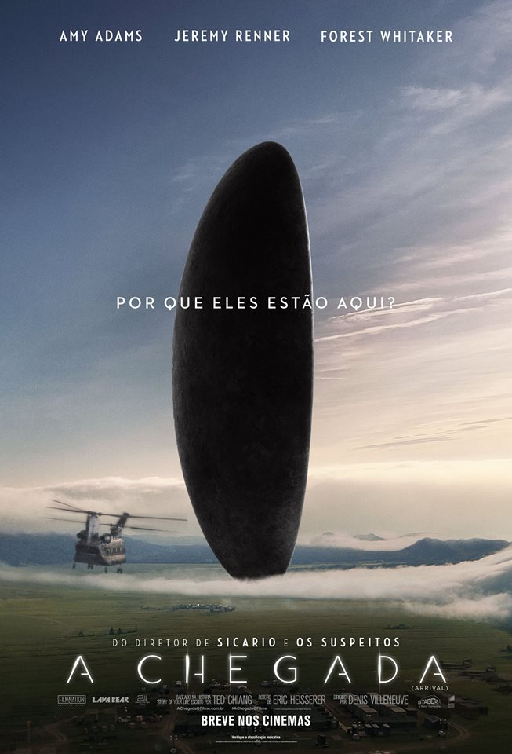
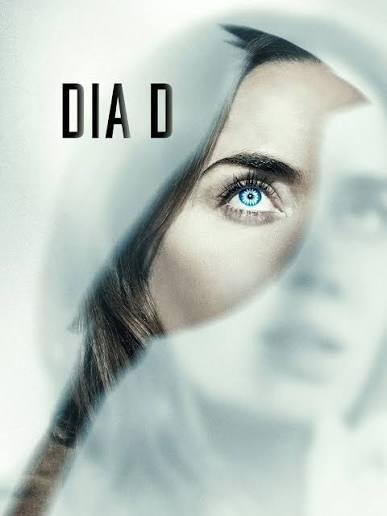
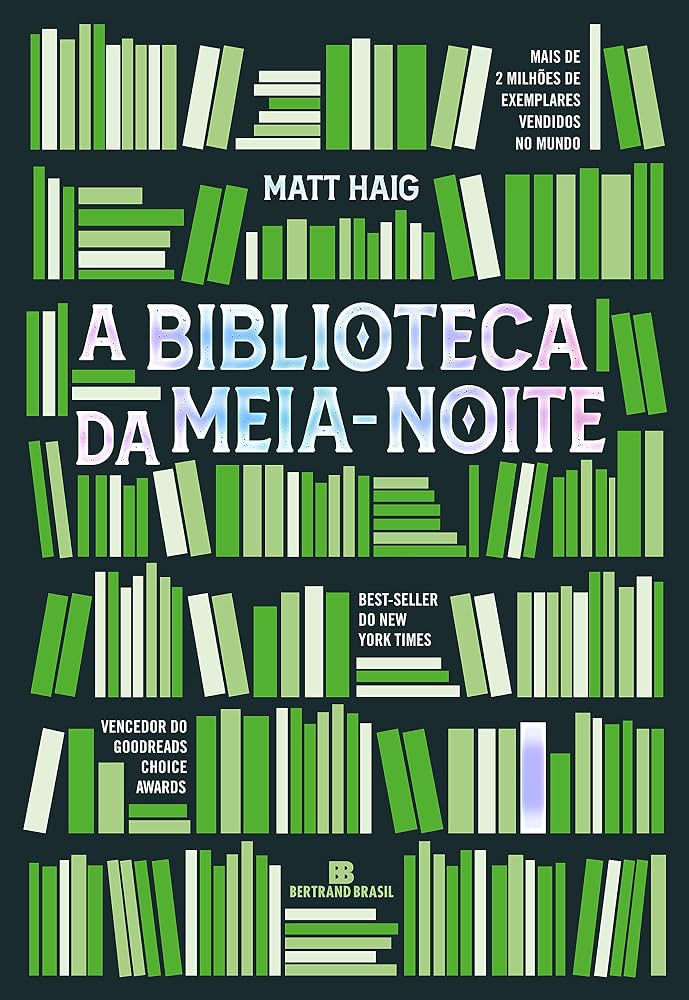

Músicas que eu gosto
Música é uma daquelas coisas que acaba acompanhando diferentes momentos da vida. Algumas músicas eu gosto pela letra, outras pela sensação que passam e algumas simplesmente porque são boas demais para não ouvir várias vezes.
Codinome Beija-Flor - Cazuza

Uma música que gosto bastante pela forma como Cazuza transforma sentimentos em palavras. É uma daquelas músicas que conseguem passar uma sensação forte mesmo sem precisar de muita explicação.
Jabuticaba - Jão

Gosto bastante da forma como o Jão consegue transformar sentimentos e situações pessoais em músicas que acabam sendo fáceis de se identificar.
Virgo's Groove - Beyoncé

Uma música que escolhi principalmente pela energia. É impossível ouvir e não entrar no clima. Também gosto muito da presença e da personalidade que a Beyoncé coloca nas músicas.
Caminhador - Anitta e Liniker
Gosto da mistura das duas artistas e da identidade que a música transmite. É uma daquelas faixas que chamam atenção justamente pela combinação de estilos e vozes diferentes.
Doce Futuro - ANAVITÓRIA
Uma música que combina bastante com essa ideia de futuro e com alguns dos sonhos que tenho para minha vida. Gosto muito desse estilo mais leve que a dupla traz.
Artistas que fazem parte da minha playlist
Essas músicas também me fizeram conhecer ou ouvir mais alguns artistas que gosto bastante.


Filmes e séries favoritos
Friends

Minha série favorita é Friends. Gosto principalmente da dinâmica entre os personagens e da forma como a série consegue transformar situações simples do cotidiano em momentos engraçados e marcantes.
A Chegada

Meu filme favorito é A Chegada. Uma das coisas que mais me interessam nele é justamente a comunicação. O filme mostra uma situação em que compreender uma forma completamente diferente de linguagem se torna essencial.
Além disso, gosto muito da maneira como o filme trabalha temas como tempo, escolhas e a forma como enxergamos nossas próprias experiências.
Dia D

Outro filme que gosto bastante é Dia D. Gosto principalmente de histórias de ficção científica e esse filme consegue trazer uma narrativa interessante sobre vida extraterrestre, a forma como lidamos com o desconhecido e é um filme com uma leve pinta de ação.
Um livro que me marcou
A Biblioteca da Meia-Noite

Um livro que me marcou bastante foi A Biblioteca da Meia-Noite, de Matt Haig.
Acho que ele me tocou principalmente por tratar de escolhas, arrependimentos e diferentes possibilidades que uma pessoa poderia ter seguido na vida.
Por já ter passado por momentos difíceis, algumas das reflexões apresentadas no livro acabaram tendo um significado ainda maior para mim. Ele me fez pensar bastante sobre como às vezes podemos olhar para a nossa própria vida pensando no que poderia ter sido diferente, sem perceber as coisas que ainda podemos viver.
É um daqueles livros que, mesmo depois de terminar, continua fazendo você pensar em algumas partes da história.
Hobbies que fazem parte da minha vida
Natação
Nadar é uma das atividades que gosto de fazer. Além de ser uma atividade física, gosto muito da sensação de estar na água e de conseguir desligar um pouco da cabeça.
Dançar
Dançar também faz parte da minha rotina. Principalmente nas sextas à noite, quando costumo dançar com algumas amigas. É uma forma de me divertir, sair da rotina e simplesmente aproveitar o momento.
Correr
A corrida é outra atividade que gosto de praticar. Gosto do desafio de conseguir melhorar aos poucos e também de usar esse momento para ficar comigo mesmo.
Viajar
E claro, viajar não poderia ficar de fora. Conhecer lugares diferentes, pessoas novas e viver experiências que eu nunca teria na minha rotina é uma das coisas que mais quero continuar fazendo pela vida.